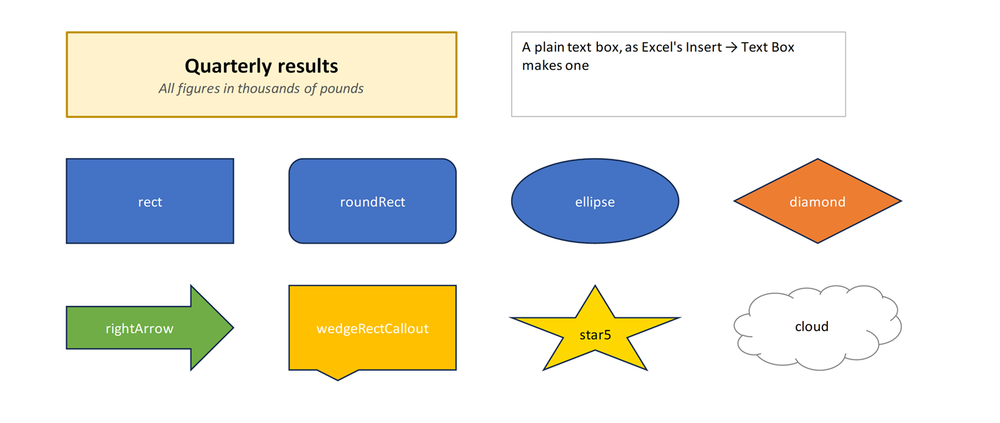

Text boxes and shapes
Text boxes and shapes float over the cells, as images do, to label a sheet, explain a table or point at a result. XLSX.addTextBox adds a text box, as Excel's Insert → Text Box does, and XLSX.addShape adds a rectangle, oval, arrow, callout or other shape, as Insert → Shapes does. The file must be open for writing (mode="rw", or a new workbook from XLSX.newxlsx).

julia> s = XLSX.newxlsx()[1];
julia> XLSX.addTextBox(s, "B2:H5", "Quarterly results\nAll figures in thousands";
font=(size=14, bold=true), fill="FFF2CC", horizontal=:center, vertical=:middle)
(sheet = "Sheet1", name = "TextBox 1", from = "B2", to = "H5")
julia> XLSX.addShape(s, "B8:D11", :roundRect; text="Start here", horizontal=:center, vertical=:middle)
(sheet = "Sheet1", name = "Rectangle: Rounded Corners 2", from = "B8", to = "D11")Where it goes
Like an image, the object covers a range of cells ("B2:H5"), or starts at a cell and takes its size in pixels, snapped to whole cells. It moves with its cells when rows and columns are inserted and deleted. Deleting all the rows or columns under it deletes it too.
Text
The text is a string, in which "\n" starts a new paragraph, or a RichTextString for parts in different fonts, as in a cell:
title = XLSX.RichTextString(
XLSX.RichTextRun("Quarterly results", [:bold => true, :size => 16]),
XLSX.RichTextRun("\nAll figures in thousands of pounds", [:italic => true, :color => "595959"]))
XLSX.addTextBox(sheet, "B2:H5", title; fill="FFF2CC", line="BF9000", lineWidth=1.5)font sets the font of the whole text, with the settings XLSX.setFont takes: bold, italic, under, strike, size, color, name and vertAlign. A rich text run's own settings take precedence. horizontal (:left, :center, :right, :justify) and vertical (:top, :middle, :bottom) place the text in the box.
Fill and border
A text box is white with a thin grey border, and a shape takes Excel's default style: the theme's first accent colour with white text. fill gives another colour, or :none to see through it, and line, lineWidth and lineDash the border's colour (or :none), width in points and dashes. Colours can be given in any of the forms in Specifying colors, including theme colours such as :accent2.
XLSX.addShape(sheet, "N8:P11", :diamond; text="Check", fill=:accent2)
XLSX.addShape(sheet, "J14:L17", :star5; fill="gold", line=:none, font=(color="black",))The shapes are :rect, :roundRect, :ellipse, :triangle, :rtTriangle, :diamond, :parallelogram, :trapezoid, :pentagon, :hexagon, :octagon, :plus, :star5, :rightArrow, :leftArrow, :upArrow, :downArrow, :leftRightArrow, :chevron, :homePlate, :wedgeRectCallout, :wedgeRoundRectCallout, :wedgeEllipseCallout, :cloud, :heart, :lightningBolt, :sun, :moon, :smileyFace, :flowChartProcess, :flowChartDecision, :flowChartTerminator, :can, :cube.
Reading and deleting
XLSX.getShapes lists a sheet's text boxes and shapes with their names, kinds, cells and text, from any file. XLSX.deleteShape deletes those at a cell, or the one with a given name. Images and charts are separate: see Images and Charts.
julia> [(sh.name, sh.kind, sh.text) for sh in XLSX.getShapes(s)]
2-element Vector{Tuple{String, Symbol, String}}:
("TextBox 1", :textbox, "Quarterly results\nAll figures in thousands")
("Rectangle: Rounded Corners 2", :roundRect, "Start here")
julia> XLSX.deleteShape(s, "B8")
1See also
- API: Text boxes and shapes in Images, comments and hyperlinks
- Related guides: Images, which are anchored the same way